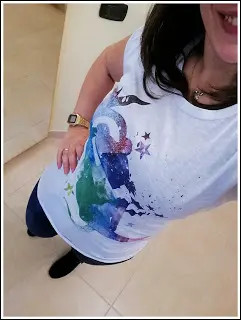
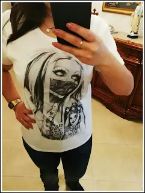

MAGLIETTOPOLI.IT
MAGLIETTOPOLI, si sa che lo shopping è sempre stato per molti un motivo di rilassamento. Infatti, io da piccola quando ero particolarmente giù sì, mia madre ero solita portarmi al centro commerciale e fare shopping. È sempre stata una terapia contro la tristezza. Adesso che sono grande non posso farne a meno, infatti appena sono un po' giù, uso questo metodo per rallegrarmi. (Diciamo che è anche una scusa per comprare cose nuove :D ) a tutte piace comprare e avere cose nuove nell'armadio. Smanettando su internet, oggi è possibile fare shopping comodamente da casa, ormai è una moda che va avanti da un po' di anni. Difatti io oggi voglio presentarvi un sito di abbigliamento che ho trovato molto interessante, con cose davvero fighissime. Sto parlando di Magliettopoli.it
MAGLIETTOPOLI, un'azienda del tutto made in Italy sito a Barletta, ha una vasta scelta tra t-shirt per uomini, donne e bambini, body, bavaglini, felpe. La cosa stupenda è che ha una gamma enorme di stampe, cucite interamente a mano quindi del tutto originali, che variano di categoria.
Le stampe che vanno dagli anni 70-80-90, stampe dei cartoni e stampe davvero carine e sfiziose.
È possibile anche, nel caso in cui non troviate la stampa adatta per voi, creare la vostra stampa ideale caricandola direttamente dal vostro pc.
Per chi è un negoziante, registrandosi appunto come un'azienda o come un negozio, è possibile avere lo sconto del 50%, creare stampe anche del logo della vostra azienda e tutto questo verrà anche coordinato con il laccetto e l'etichetta da poter poi vendere.
Io ho scelto queste 3 magliette in cotone.
La prima l'ho scelta perché è raffigurata la mia adorata Sailor Moon e non potevo non prenderla :D

La seconda è una scritta LOVE perché diciamolo, la parola love ci sta sempre bene e poi la vedo adatta sui jeans.
Poi ho preso una con in disegno in bianco e nero che posso abbinare anche sui leggins di diversi colori.

Un consiglio che voglio darvi è di stenderle con il disegno dentro quindi con la maglietta girata al contrario. Stessa cosa anche quando la si stira.
Cosa importante è che è possibile pagare con PayPal, VISA, Mastercard, PostaPay e udite udite, pagamento anche alla consegna.
Vi lascio i loro social.